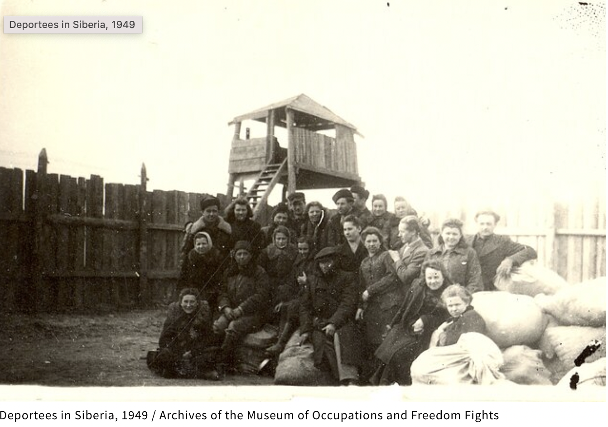
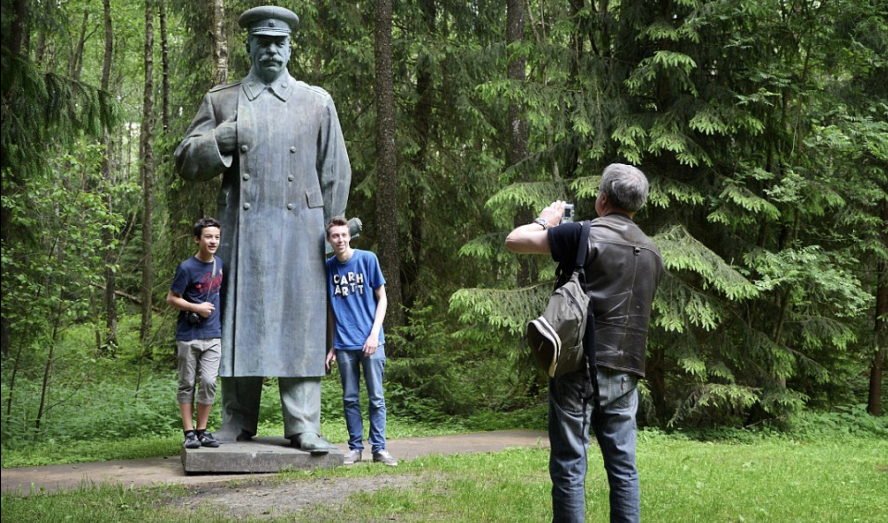

Rusn 309: Week 3. Nation State agaist the Empire.
-
Monday, June 30:
Reading for June 30th: Timothy Snyder. The Reconstruction of Nations
- 1 The Grand Duchy of Lithuania
- 2 Lithuania! My Fatherland!
- 3 The First World War and the Wilno Question

-
Tuesday July 1:
1:30PM. till 2:30
Lecture. Dr. Aleksandra Filipenko “Russophone Media In Exile"
-
Wednesday July 2:
Workshop: Creating a 360 video tour. Filezilla. I need your egg hunt question by July 2nd.
-
Friday, July 4:
I would like to invite you to this US event in Lithuania –
U.S. Independence Day Celebration 2025,
which will take place at VFA-Hanner stadionas,
8A Bukčių gatvė 04127 Vilnius, from 3 to 9 pm.
We depart from the hotel at 3PM.
-
Saturday, July 5:
A field trip to Grutas Park.
